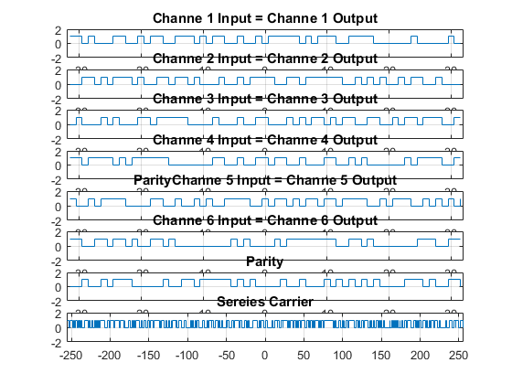

Contents
%----------------------------------------------------------------------% %%-------------- Lab Mid-Term 2 Digital Communication ------------------%% %--------------- Supervisor: Dr.Shirvani Moghaddam ---------------% %------- Source by Mohammad Reza Farhadi Nia ----- Date:Nov 2020 --% %----------------------------------------------------------------------%
MUX
Inputs : 8 bit frames
Tail0 = 0*(1:64) + 1; cha1in = randi([0 1],1,64); cha2in = randi([0 1],1,64); cha3in = randi([0 1],1,64); cha4in = randi([0 1],1,64); cha5in = randi([0 1],1,64); cha6in = randi([0 1],1,64); Parity = xor(xor(xor(xor(xor(cha1in,cha2in),cha3in),cha4in),cha5in),cha6in); Parallel_input = [Tail0; cha1in; cha2in; cha3in; cha4in; cha5in; cha6in; Parity]; Sereies = Par2SerOpt(Parallel_input, 8, 64)
DMUX
Output
Prallel_output = Ser2ParOpt(Sereies, 8) cha1out = Prallel_output(2,:); cha2out = Prallel_output(3,:); cha3out = Prallel_output(4,:); cha4out = Prallel_output(5,:); cha5out = Prallel_output(6,:); cha6out = Prallel_output(7,:); cha7out = Prallel_output(8,:); erorr = Parallel_input - Prallel_output; erorr1 = cha1out - cha1in; figure subplot(8,1,1);stairs([-length(cha1in)/2+1/2:length(cha1in)/2-1/2],cha1in); axis([-length(cha1in)/2 length(cha1in)/2 -2 2]);title('Channe 1 Input = Channe 1 Output');grid on; subplot(8,1,2);stairs([-length(cha2out)/2+1/2:length(cha2out)/2-1/2],cha2out); axis([-length(cha2out)/2 length(cha2out)/2 -2 2]);title('Channe 2 Input = Channe 2 Output');grid on; subplot(8,1,3);stairs([-length(cha3in)/2+1/2:length(cha3in)/2-1/2],cha3in); axis([-length(cha3in)/2 length(cha3in)/2 -2 2]);title('Channe 3 Input = Channe 3 Output');grid on; subplot(8,1,4);stairs([-length(cha4out)/2+1/2:length(cha4out)/2-1/2],cha4out); axis([-length(cha4out)/2 length(cha4out)/2 -2 2]);title('Channe 4 Input = Channe 4 Output');grid on; subplot(8,1,5);stairs([-length(cha5out)/2+1/2:length(cha5out)/2-1/2],cha5out); axis([-length(cha5out)/2 length(Parity)/2 -2 2]);title('ParityChanne 5 Input = Channe 5 Output');grid on; subplot(8,1,6);stairs([-length(cha6out)/2+1/2:length(cha6out)/2-1/2],cha6out); axis([-length(cha6out)/2 length(cha6out)/2 -2 2]);title('Channe 6 Input = Channe 6 Output');grid on; subplot(8,1,7);stairs([-length(cha7out)/2+1/2:length(cha7out)/2-1/2],cha7out); axis([-length(cha7out)/2 length(cha7out)/2 -2 2]);title('Parity');grid on; subplot(8,1,8);stairs([-length(Sereies)/2+1/2:length(Sereies)/2-1/2],Sereies); axis([-length(Sereies)/2 length(Sereies)/2 -2 2]);title('Sereies Carrier');grid on;
Parallel to Series Optimum O(n)
function Output = Par2SerOpt(Input, row_len, column_len) for column = 1:column_len Output(1, (column-1)*row_len+1:column*row_len) = Input(1:row_len, column); end end
Sereies =
Columns 1 through 13
1 1 0 0 1 1 1 0 1 1 0 1 1
Columns 14 through 26
0 1 0 1 0 1 0 0 0 0 1 1 1
Columns 27 through 39
1 0 1 1 0 0 1 0 0 0 1 0 1
Columns 40 through 52
0 1 0 1 1 1 1 1 1 1 0 0 0
Columns 53 through 65
1 1 0 0 1 1 1 1 0 1 1 1 1
Columns 66 through 78
1 1 0 1 1 1 1 1 0 1 0 0 0
Columns 79 through 91
0 1 1 0 0 0 1 0 1 0 1 1 1
Columns 92 through 104
1 1 0 0 0 1 0 0 1 1 0 0 0
Columns 105 through 117
1 1 0 0 1 1 1 0 1 1 1 1 1
Columns 118 through 130
1 1 0 1 0 1 1 1 0 0 1 1 0
Columns 131 through 143
0 1 0 0 1 0 1 1 1 1 0 1 0
Columns 144 through 156
0 1 1 1 1 0 0 0 1 1 1 0 0
Columns 157 through 169
0 0 0 1 1 0 1 0 0 1 0 0 1
Columns 170 through 182
1 0 0 0 0 0 1 1 0 0 0 0 1
Columns 183 through 195
0 1 1 1 0 1 1 0 0 1 1 1 1
Columns 196 through 208
0 1 0 0 1 1 0 0 0 0 1 0 1
Columns 209 through 221
1 0 0 0 0 1 1 0 1 1 1 1 1
Columns 222 through 234
1 0 1 1 0 0 0 0 1 1 0 1 0
Columns 235 through 247
1 0 0 0 0 1 1 1 1 1 1 0 0
Columns 248 through 260
0 1 0 1 1 1 1 0 0 1 1 1 0
Columns 261 through 273
0 0 0 0 1 1 0 0 1 1 1 0 1
Columns 274 through 286
1 0 0 1 1 0 1 1 1 1 1 0 0
Columns 287 through 299
1 0 1 1 1 0 0 1 1 0 1 0 0
Columns 300 through 312
1 1 0 1 1 1 1 1 0 0 1 1 0
Columns 313 through 325
1 0 1 1 0 1 1 0 1 1 1 1 0
Columns 326 through 338
0 1 0 1 1 1 0 1 1 1 1 1 1
Columns 339 through 351
1 1 1 1 1 0 1 0 1 0 0 0 0
Columns 352 through 364
1 1 0 0 1 0 1 0 0 1 1 0 1
Columns 365 through 377
1 1 1 1 1 1 1 0 0 1 1 0 1
Columns 378 through 390
1 0 0 1 1 0 1 1 1 1 1 0 0
Columns 391 through 403
1 0 1 0 0 1 0 0 0 1 1 0 1
Columns 404 through 416
0 0 1 0 0 1 0 0 0 0 0 0 0
Columns 417 through 429
1 0 0 1 0 1 0 0 1 0 1 0 0
Columns 430 through 442
1 0 0 1 0 0 1 1 1 0 1 1 1
Columns 443 through 455
1 1 0 0 0 1 1 0 1 0 1 0 1
Columns 456 through 468
1 1 0 0 1 1 1 1 0 1 0 0 1
Columns 469 through 481
1 0 1 1 1 0 1 1 1 1 0 0 1
Columns 482 through 494
0 0 0 0 0 0 0 1 1 0 0 0 1
Columns 495 through 507
1 1 1 0 0 1 1 0 1 1 1 0 0
Columns 508 through 512
1 1 1 1 0
Series to Parallel Optimum O(n)
function Output = Ser2ParOpt(Input, out_len) for row = 1:ceil(length(Input)/out_len) Output(1:out_len, row) = Input(1, (row-1)*out_len+1:row*out_len); end end
Prallel_output =
Columns 1 through 13
1 1 1 1 1 1 1 1 1 1 1 1 1
1 1 0 1 0 0 0 1 1 0 0 1 0
0 0 1 1 0 1 0 1 1 1 0 1 0
0 1 0 0 0 1 0 1 0 0 0 1 1
1 1 0 1 1 1 1 0 1 0 1 1 1
1 0 0 1 0 1 1 1 1 0 0 0 0
1 1 0 0 1 1 0 1 1 0 1 0 0
0 0 1 0 0 1 0 1 1 1 0 0 0
Columns 14 through 26
1 1 1 1 1 1 1 1 1 1 1 1 1
1 1 0 0 1 1 1 0 1 0 1 1 0
0 1 1 0 1 1 0 1 0 0 0 1 0
0 1 1 1 1 1 0 0 0 0 1 0 0
1 1 1 0 0 0 0 0 0 0 1 1 0
1 1 0 0 1 0 0 1 0 1 0 0 1
1 1 0 1 0 0 0 0 0 0 0 0 0
0 0 1 0 0 1 1 0 1 1 1 1 1
Columns 27 through 39
1 1 1 1 1 1 1 1 1 1 1 1 1
0 1 0 0 1 0 1 1 1 1 1 0 1
0 1 0 1 1 1 1 0 0 1 1 0 1
0 1 0 0 1 1 0 0 0 1 0 1 0
0 1 0 0 1 1 0 1 1 0 0 1 0
1 1 1 0 0 1 0 1 1 0 1 0 1
1 0 1 0 0 0 0 1 0 1 1 1 1
0 1 0 1 0 0 0 0 1 0 0 1 0
Columns 40 through 52
1 1 1 1 1 1 1 1 1 1 1 1 1
0 1 1 1 0 0 1 1 1 1 0 0 0
1 1 1 1 1 0 0 1 0 1 0 1 0
1 1 0 1 0 1 1 0 0 1 1 0 0
0 0 1 1 0 0 1 0 1 0 0 0 0
1 0 1 1 0 1 1 1 1 0 0 1 0
1 1 1 1 0 0 1 1 0 1 0 0 0
0 0 1 0 1 0 1 0 1 0 1 0 0
Columns 53 through 64
1 1 1 1 1 1 1 1 1 1 1 1
0 0 0 1 0 0 0 0 0 1 0 0
0 1 0 1 1 0 0 1 0 0 0 0
1 0 1 1 0 1 1 1 0 0 1 1
0 0 1 0 1 1 1 1 0 0 1 1
1 1 1 0 0 1 0 1 0 1 0 1
0 0 0 0 1 1 1 0 0 1 1 1
0 0 1 1 1 0 1 0 0 1 1 0
